Watch it done (1½ minutes)
Every click, from Make a copy to your first class. Then the same steps with pictures:
Make your copy
Click Make a copy on the app’s card, then Make a copy again in Google’s box. Google says the attached Apps Script will be copied too: that’s the app. The copy is a Google Sheet in your Drive, and your students’ work saves there. Nobody else can see it.
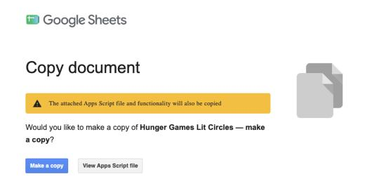
Find the Classroom App menu
A few seconds after your copy opens, a Classroom App menu appears at the top, and a note in the bottom-right corner tells you what comes next. Click Classroom App ▸ Set up my app.
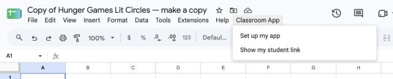
A note tells you what’s next
Until your copy is set up, this note appears each time you open it. It also explains a warning Google sometimes shows, before you meet it.
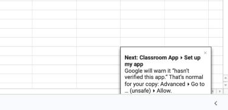
Give the app permission
Google asks for permission the first time. Click OK.
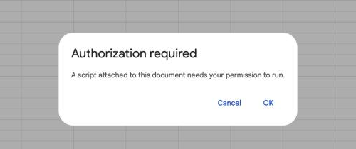
Sign in and continue
A Google window opens. Check that it shows your school Google account and click Continue. If Google lists what the app may do (keep its data in your Sheets, make Google Docs you export, send you email, connect to Canvas if you use it), tick Select all and click Continue.
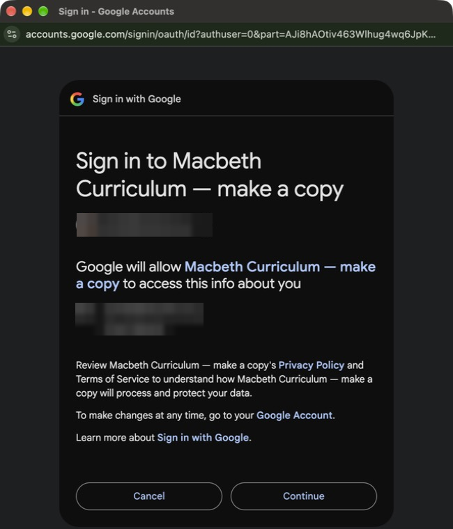
If Google says “hasn’t verified this app”
Some accounts see this, often personal Gmail accounts. Google says it about any app it hasn’t reviewed itself, and your copy is a brand-new app that only you own. Click Advanced (small, bottom left), then Go to … (unsafe), then Allow. Only you see it, once; your students never do. If the side panel doesn’t appear afterwards, click Classroom App ▸ Set up my app once more.
A side panel opens
Setup is done. The panel on the right walks you through publishing the app for your students (about a minute). Keep it open.
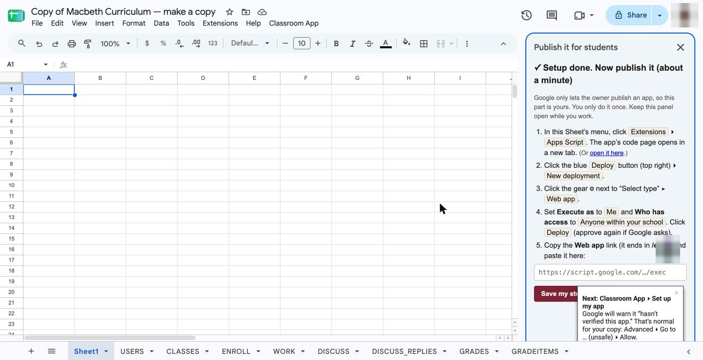
Open the app’s code page
Click Extensions ▸ Apps Script. The app’s code page opens in a new tab. You don’t need to change any code. If Google shows which account you’re signed in with, click OK.
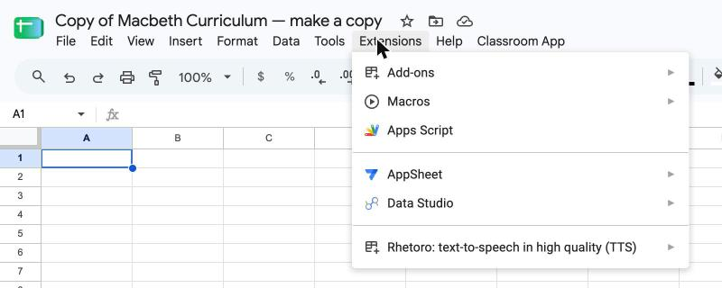
Deploy ▸ New deployment
Click the blue Deploy button (top right), then New deployment.
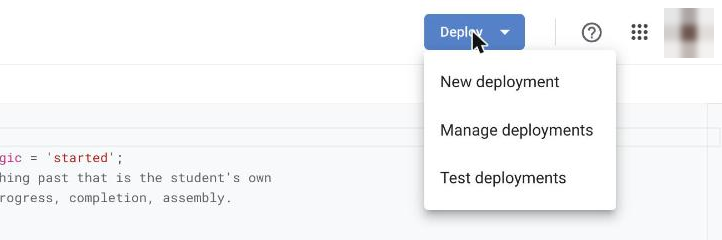
Publish it as a web app
Web app is usually chosen already (if not, click the gear ⚙ next to “Select type” ▸ Web app). Check Execute as: Me and Who has access: Anyone within your school, then click Deploy. Google asks for permission once more: click Authorize access, then Continue, same as before.
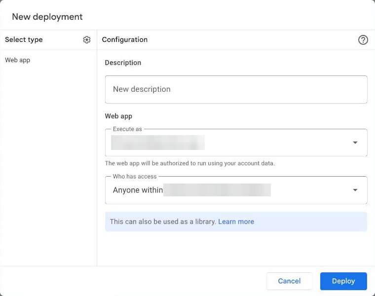
Copy your link
Under Web app, click Copy. The link ends in
/exec. Then click Done.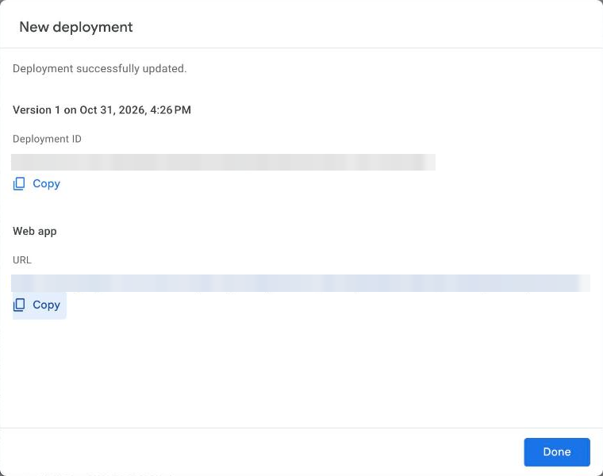
Save your student link
Back in your Sheet, paste the link into the side panel and click Save my student link. You can find it again any time under Classroom App ▸ Show my student link.
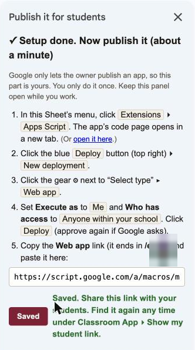
Open it and make your class
Open your link. You own the copy, so it opens the Teacher dashboard. Name your class and click Create Class. Then share the link in Canvas, Google Classroom or your class page; students join with the class code.
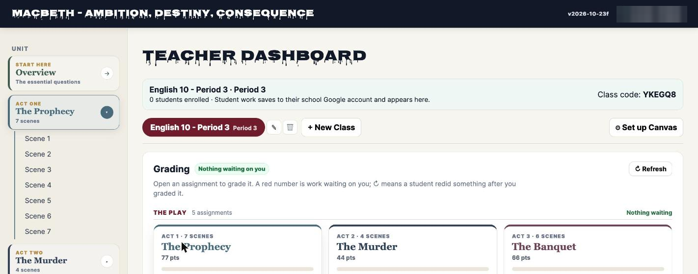